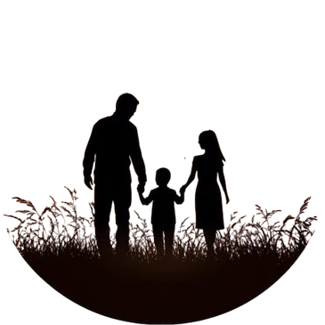

Afin de faciliter la compréhension de l'arborescence de cette famille, Veuillez cliquer sur l'image pour accéder à l'arbre généalogique de la famille Hogoki.

Nom : Hogoki.
Prénom : Olivier.
Origines Anglo-Japonais.
Age : 38 Ans.
Date de Naissance : 25 Aout 1987.
Matières : Etude des Moldu / SCM / Sortilèges .
Bois de Baguette : Bois de Houx.
Coeur de Baguette : Ventricule de Dragon.
Taille de Baguette : 27.8 cm.
Rigidité de Baguette : Rigide.
Apparence Physique :
Il arbore des cheveux noirs mi-longs qu'il coiffe principalement vers l'arrière, une barbe soignée, ainsi que des yeux perçants d'une couleur marron aux nuances légèrement rougeâtres.
Il mesure 1 m 85 et possède une carrure aux épaules larges, tout en conservant une allure détendue.
Son style vestimentaire est simple, confortable, avec une subtile touche d'élégance. Selon lui, un professeur doit garder une certaine prestance face à ses élèves, sans toutefois paraître intimidant.

Personnalité :
C’est un homme ouvert d’esprit, chaleureux et attentif aux besoins de ses élèves. Très apprécié pour sa capacité d’écoute, il instaure aisément un climat de confiance en classe. À la fois flexible et rigoureux, il exige un certain sérieux tout en accordant régulièrement à ses élèves des moments de détente.
Doté d’un côté taquin, il aime glisser occasionnellement une petite plaisanterie pour détendre l’atmosphère et rendre les situations plus agréables.
Philosophe dans l’âme, il privilégie les discussions approfondies et respectueuses, stimulant ainsi la réflexion et l’ouverture d'esprit.
Protecteur, il place le bien-être et la sécurité de ses élèves au cœur de ses priorités. Tourné vers l’avenir, il ne cache pas les grands espoirs qu’il place en ses élèves, qu’il considère comme l’avenir de la communauté magique, ainsi qu'il aime à le répéter.
Il sait néanmoins se montrer ferme lorsque cela est nécessaire, considérant les punitions comme un moyen juste et efficace pour faire comprendre leurs erreurs aux élèves, sans jamais en abuser.
Compétences :
- Autoritaire : Il sait s’imposer auprès des élèves récalcitrants afin de leur faire comprendre leurs erreurs.
- Juste : Il ne privilégie aucun élève en particulier, et applique toujours des sanctions appropriées.
- Adaptable : Il ajuste sa méthodologie selon les besoins spécifiques de chacun, pouvant également dépanner ses collègues si nécessaire.
- Ouvert d'esprit : Il accueille favorablement les critiques constructives et l’argumentation, estimant qu'il apprend davantage de ses erreurs que de ses réussites.
- Attentif : Il se montre toujours disponible et prêt à écouter les élèves ayant besoin de soutien ou de dialogue.

Objectifs :
- Offrir un environnement sain et propice à l'apprentissage ainsi qu'à l'épanouissement des élèves.
- Apporter son aide à ses collègues comme à ses élèves, quelle que soit la situation.
- Fournir un soutien moral et rassurant en ces temps troublés.
- Maintenir une discipline efficace au sein de la maison dont il pourrait avoir la charge.
Histoire :
Cette histoire possède un passé. Vous le trouverez dans la section concernant "L'ancêtre".

Olivier est né au sein d'une famille moldue modeste. Son père, Masade Hogoki, était menuisier dans l'entreprise de son beau-père. La mère d’Olivier s’occupait de l’administration de cette même entreprise.
Travaillant à domicile — entreprise familiale oblige — elle pouvait ainsi veiller sur le jeune Olivier et participer activement à son éducation.
Son enfance fut des plus simples. Il fréquenta une école moldue, où il parvint à se faire quelques amis sans jamais s'attirer d’ennuis. Entre petites bêtises et bons retours des professeurs, ses parents n’avaient aucune raison de se plaindre de lui. Son père lui enseigna très tôt l’importance de l’entraide, que tout effort mérite récompense, et surtout que le respect doit être mutuel. Sa mère, quant à elle, animée d’un amour maternel très présent, lui transmit la compassion, la patience et l’écoute — sans oublier son petit humour bien à elle, que le jeune Olivier adopta très vite, au grand dam de son père, souvent résigné face à leurs blagues complices.
Son enfance fut des plus simples. Il fréquenta une école moldue, où il parvint à se faire quelques amis sans jamais s'attirer d’ennuis. Entre petites bêtises et bons retours des professeurs, ses parents n’avaient aucune raison de se plaindre de lui. Son père lui enseigna très tôt l’importance de l’entraide, que tout effort mérite récompense, et surtout que le respect doit être mutuel. Sa mère, quant à elle, animée d’un amour maternel très présent, lui transmit la compassion, la patience et l’écoute — sans oublier son petit humour bien à elle, que le jeune Olivier adopta très vite, au grand dam de son père, souvent résigné face à leurs blagues complices.
Du haut de ses cinq ans, Olivier accueillit une petite sœur : Jane. Le jeune garçon se jura alors de la protéger et de chérir cette sœur qu’il avait tant attendue.
Leur enfance connut des hauts et des bas, entre moments de complicité et disputes — une relation frère-sœur tout à fait ordinaire, en somme.
Cependant, au fil des années, Olivier commença à se sentir… différent. Le premier signe de cette étrangeté survint lors d’une nuit d’orage. Sa petite sœur, terrifiée par les éclairs et le tonnerre, se retrouva dans l’obscurité totale à cause d’une panne de courant dans leur chambre d’enfant. Olivier, impuissant face à ses pleurs et ne sachant que faire, ressentit une profonde frustration. Et soudain, sans qu’il ne comprenne pourquoi, la bougie posée sur leur table de chevet s’alluma d’elle-même. Il ne sut pas comment cela avait pu se produire — mais pour Jane, cette simple lumière suffisait à la rassurer.
Cependant, au fil des années, Olivier commença à se sentir… différent. Le premier signe de cette étrangeté survint lors d’une nuit d’orage. Sa petite sœur, terrifiée par les éclairs et le tonnerre, se retrouva dans l’obscurité totale à cause d’une panne de courant dans leur chambre d’enfant. Olivier, impuissant face à ses pleurs et ne sachant que faire, ressentit une profonde frustration. Et soudain, sans qu’il ne comprenne pourquoi, la bougie posée sur leur table de chevet s’alluma d’elle-même. Il ne sut pas comment cela avait pu se produire — mais pour Jane, cette simple lumière suffisait à la rassurer.

Après cet étrange événement, d’autres phénomènes inexplicables commencèrent à se produire autour d’Olivier.
Des portes qui claquaient lorsqu’il était en colère, les lacets de ceux qui l’ennuyaient qui se nouaient tout seuls, des objets qui bougeaient ou tombaient sans raison apparente...
Autant dire que plus le temps passait, plus Olivier se demandait ce qui n’allait pas — et surtout pourquoi ces choses étranges semblaient toujours survenir autour de lui.
Toutes ces interrogations et inquiétudes trouvèrent enfin une réponse un jour d’août 1998, quelques jours avant son onzième anniversaire. Un homme se présenta à la porte des Hogoki, humble et courtois. Il venait mettre fin aux doutes du jeune garçon. Olivier apprit alors qu’il était un sorcier. Et aucun membre de la famille ne put remettre cela en question après la démonstration de magie que fit l’inconnu devant leurs yeux ébahis. L’homme leur expliqua tout : l’existence du monde magique, ce que cela signifiait pour Olivier, et surtout, ce que l’avenir lui réservait — une place dans la prestigieuse école de sorcellerie : Poudlard. Et c’est ainsi qu’Olivier reçut sa lettre.
Toutes ces interrogations et inquiétudes trouvèrent enfin une réponse un jour d’août 1998, quelques jours avant son onzième anniversaire. Un homme se présenta à la porte des Hogoki, humble et courtois. Il venait mettre fin aux doutes du jeune garçon. Olivier apprit alors qu’il était un sorcier. Et aucun membre de la famille ne put remettre cela en question après la démonstration de magie que fit l’inconnu devant leurs yeux ébahis. L’homme leur expliqua tout : l’existence du monde magique, ce que cela signifiait pour Olivier, et surtout, ce que l’avenir lui réservait — une place dans la prestigieuse école de sorcellerie : Poudlard. Et c’est ainsi qu’Olivier reçut sa lettre.
Toutes ces informations, toutes ces nouveautés, toutes ces questions... Autant dire qu’il fallut quelques jours à la famille pour digérer l’ensemble.
Néanmoins, les parents avaient bien perçu cette crainte constante qu’Olivier éprouvait face à ses pouvoirs, et ils jugèrent que l’envoyer dans cette école était la meilleure chose à faire pour lui.
Bien sûr, sa petite sœur ressentit une pointe de jalousie — mêlée d’envie — envers son frère. Mais elle ne cacha pas qu’il allait énormément lui manquer.
Après un passage rapide sur le Chemin de Traverse, accompagné de ses parents et de l’homme envoyé pour l’accueillir dans le monde magique, Olivier monta à bord du Poudlard Express, prêt à entamer cette nouvelle et inattendue aventure qu’était la vie de sorcier.
Après un passage rapide sur le Chemin de Traverse, accompagné de ses parents et de l’homme envoyé pour l’accueillir dans le monde magique, Olivier monta à bord du Poudlard Express, prêt à entamer cette nouvelle et inattendue aventure qu’était la vie de sorcier.
Années d'études à Poudlard
Résumé sur Aurore
Début de étude puis carrière en tant que prof
Arrivée de Girah
Vie actuelle, départ pour devenir professeur à Poudlard
Retour